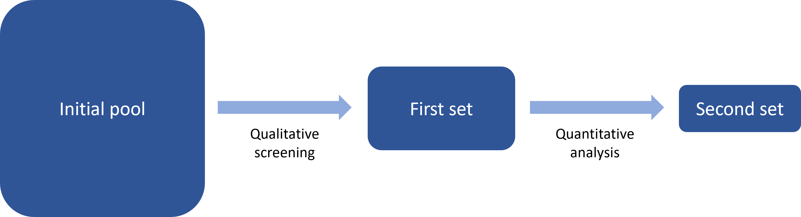

Recently we explored how to build a conceptual framework for a composite indicator. Once you have a conceptual framework, the next step is to populate it with indicators. It’s worth reiterating that these steps are usually iterative, meaning that you may begin with a rough conceptual framework, then begin identifying indicators, adjust the framework, move back to indicator selection and so on. But with that said, let’s explore the basics of indicator selection.
Several stages
Most likely there are going to be at several rounds of selection. This sounds complicated, but simply represents the reality of building an indicator framework. I would suggest that indicator selection often looks something like this:

Here, the “initial pool” is a wider set of possible indicators, for which data has not yet necessarily been collected. This is first narrowed down to a “First set” of indicators which are realistic and satisfy basic qualitative properties. Then, after data collection, a quantitative analysis can help to narrow down the set yet further to the “Second set”. The sizes of the boxes are roughly meant to represent the numbers of indicators at each stage.
Now we will examine each of these steps more carefully.
Qualitative selection
Let’s say that we arrived at the point where we have mapped the concept we want to measure, i.e. our conceptual framework is sketched out. The next step is to think which indicators could be used to measure each group at the lowest level of the framework. It is likely that in the process of building the conceptual framework (e.g. via workshops, literature review, talking to experts, etc.) you will have already identified some potential indicators, and possibly have a list of suggestions from experts and stakeholders (some realistic, other perhaps less so). You may have also identified other indicators from looking at other scoreboards and indexes.
This “longlist” of indicators represents the “Initial pool” in the figure above. Note that at this stage, it is just a (potentially long) list of possible indicators, and the serious data business of data collection has not yet started. Why? Because collecting data can be quite time-consuming, and we want to be sure that each indicator we set out to collect data for is worth the effort.
For this reason, we can apply an initial set of qualitative indicator criteria to our longlist, to narrow it down to the most useful indicators. Here are a few criteria you might want to think about.
- Relevance: the indicator must be relevant to the concept we are measuring, and relevant to the specific chunk of the concept we are examining.
- Availability: we may not have acquired the data yet, but is the data out there somewhere? We should at least have an idea of where/how to acquire the data.
- Cost of acquisition: meaning cost in terms of time and money. Some indicators can be easily and quickly acquired through centralised databases (e.g. Eurostat, World Bank). Others can be either very time-consuming to acquire (e.g. involving surveys or complex web-scraping) or expensive (buying proprietary data sets from private companies), or both!
- Reliability: is the data from a trusted source?
- Value added: indicators should each bring some unique information to the framework, and overlaps should be minimised.
- Interpretability: it should be clear what the indicator is measuring, so that it is useful to end users on its own, as well as part of a framework
- Sustainability: assuming the indicator framework will be updated in the future, how likely is it that the indicator source will still be available?
It is worth assessing the pool of indicators against these criteria, to help pick out the most suitable ones to take forward to the next step. Keep a record of the selection so you can show why indicators were discarded (stakeholders/experts will commonly ask why their suggested indicators were not included when they see the finished product).
Quantitative selection
We have now arrived at the “First set” as shown in the flow chart above. At this point, data has to be collected for each indicator. This process could take rather a long time, and much could be said about that, but let’s fast forward to the point where you have data for each indicator. What’s next?
At this point we can perform a quantitative analysis and further screen the indicators based on another set of criteria, which are suggested as follows.
Data availability: almost always, indicators will have missing data for some units. Ideally, we want as few missing data points as possible (with respect to the set of units we wish to compare).
Timeliness: how recent is the most recent data point? We clearly prefer the most up-to-date data.
Frequency: how often is the data updated? Be careful with indicators that may only be updated every 2 years or more.
Time series length: this is linked to data availability. If you wish to measure your concept over time, longer time series are preferable because they allow more detailed time series analysis.
Granularity: even if you are creating an index at the national level, for example, indicators with sub-national data (e.g. regional or city data) can give interesting extra possibilities for analysis.
Differentiation: indicators should be able to differentiate between countries/units. If the indicator has the same or very similar values for all or most units, it is not very useful in making comparisons.
Correlations: can help to identify relationships between indicators, including unexpected negative correlations, collinearity, and others. See our blog post on this topic.
Metadata: apart from the data availability, the presence of metadata should be taken into account. For example, if targets are required, are they available? Is the source of the data available and the methodology transparent? And so on.
Interestingly, data availability is relative to the set of units you want to measure. For example, if you aim to have an index value for each country worldwide, data availability is the percentage of countries for which your indicator has a measured value. However, before discarding indicators it may be worth a different approach: discarding units (countries). Many indexes target a more modest set of countries, e.g. 100-150 or so, for which data is available for most indicators. This brings up the data availability score for each indicator. Excluded countries can still be reported on using the few available indicators, but without generating aggregate scores.
Other considerations
As mentioned, indicator selection is an iterative process. The important thing is to keep a record of what you did and why each indicator was discarded or retained.
Selection criteria should not be applied too rigidly and make room for special cases and considerations. For example, depending on the context, some indicators with possibly low data availability may be politically highly relevant, and discarding them could cause communication issues for the framework. We may also find two indicators that are highly correlated: however, although this may not be ideal in building the index, they may both have added value as individual indicators, recalling that we should always present the indicator data along with the index for users to explore.
There may be other context-dependent criteria. For example, if the objective of the indicator framework is to monitor the progress or performance of e.g. a policy or intervention, you may need to also consider whether indicators are inputs, outputs, outcomes etc. This is also another topic for another blog post!
Concluding
This has been a short tour into indicator selection. Often, the selection of indicators is going to boil down mostly to what is relevant and what is available. However, we should be very careful to examine the remaining set of indicators with a critical eye.
It is not uncommon that there will be important gaps in the framework simply because no data (or perhaps very little) is available for a desired indicator. This should be highlighted and can help to encourage future efforts to collect the important data.
Equally, when drawing conclusions with our final set of indicators and the index, keep in mind that the index will inevitably have gaps, and these gaps do affect the results.